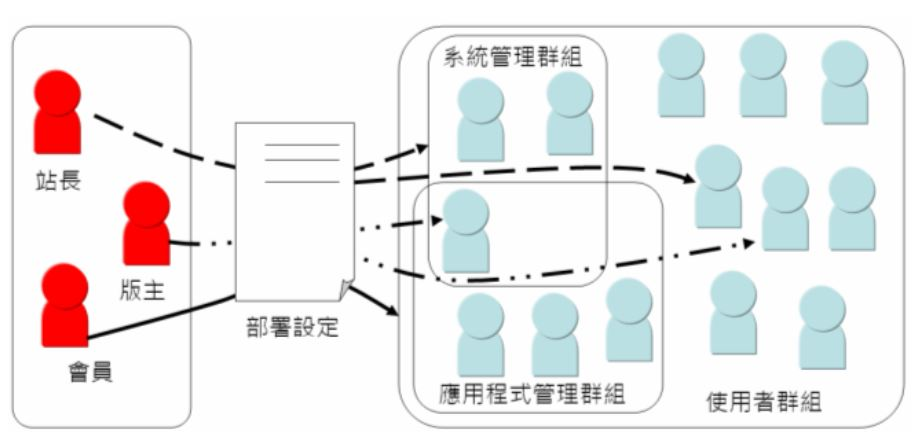

儘管對安全的要求細節各不相同，然而 Web 容器對於以下的四個安全基本特性提供了基礎：
驗證（Authentication）
具體來說就是身份驗證，也就是確認目前溝通的對象（號稱自己有權存取的對象），真的是自己所宣稱的使用者（User）或身份（Identify）（你說自己是 caterpillar 這個使用者，那證據是什麼？）。
資源存取控制（Access control for resources）
基於完整性（Integrity）、機密性（Confidentiality）、可用性限制（Availability constraints）等目的，對資源的存取必須設限，僅提供給一些特定的使用者或程式。
資料完整性（Data Integrity）
在資訊傳輸期間，必須保證資訊的內容不被第三方修改。
資料機密性或隱私性（Confidentiality or Data Privacy）
只讓具合法權限的使用者存取特定的資料。
Java EE 使用基於角色的存取控制（Role-based access control），在使用 Web 容器所提供的安全實作之前，必須先了解幾個 Java EE 的名詞與觀念：
使用者（User）
允許使用應用程式服務的合法個體（也許是一個人或是一台機器），簡單地說，應用程式會定義使用者清單，要使用應用程式服務必須先通過身份驗證成為使用者。
群組（Group）
為了方便管理使用者，可以將多個使用者定義在一個群組中加以管理。例如一般使用者群組、系統管理群組、應用程式管理群組等，通常一個使用者可以同時屬於多個群組。
角色（Role）
Java 應用程式授權管理的依據，使用者是否可存取某些資源，所憑藉的是使用者是否具備某種角色。群組與角色容易讓人混淆不清，群組是系統上管理使用者的方式，而角色是 Java 應用程式中管理授權的方式。
例如，伺服器系統上有使用者及群組的資料清單（通常儲存在資料庫中），但 Java 應用程式的開發人員在進行授 權管理時，無法事先得知這個應用程式將部署在哪個伺服器上，所以無法直接使用伺服器系統上的使用者及群組來進行授權管理，而必須根據角色來定義。屆時 Java 應用程式真正部署至伺服器時，再透過伺服器特定的設定方式，將角色對應至使用者或群組。
上圖左邊定義了三個應用程式角色，角色實際如何對應至伺服器系統上的使用者或群組，則透過實際部署時的設定來決定。例如上圖中站長角色將對應至系統管理群組的三個使用者以及使用者群組的一個使用者，而版主角色則對應至系統管理群組的一個使用者與使用者群組的一個使用者。
將角色對照至使用者或群組的設定方式並非 Java EE 標準的一部份，而是不同的應用程式伺服器會有不同的設定方式。
例如在 Tomcat 容器中，會透過 conf 資料夾下的 tomcat-users.xml 來設定角色與使用者的對照，一個範例如下：
<tomcat-users> <role rolename="Admin"/> <role rolename="Member"/> <user username="caterpillar" password="123456" roles="Admin,Member"/> <user username="momor" password="123456" roles=" Member"/> </tomcat-users>在上例中，如果通過容器驗證而登入為 caterpillar 的使用者，將擁有 Admin 與 Member 角色，將可以存取 Web 容器授與 Admin 與 Member 角色的資源，至於容器中如何定義，之後會再提到。
Realm
儲存身份驗證時所需資料的地方。Realm 這個名詞乍看之 下有點難以理解，但在談及安全時，卻很常看到這個名詞。舉幾個例子來說，如果進行身份驗證的方式是基於名稱及密碼，則儲存名稱及密碼的地方就稱之為 Realm，這也許是來自檔案，或是資料庫中的使用者表格，也可能是記憶體中的資料，甚至來自網路。當然，驗證的方式不僅是基於名稱及密碼，也有可能基於 憑證（Certificate）之類的機制，這時提供憑證的來源就是 Realm。
了解這幾個名詞，之後在介紹如何使用Web容器安全管理時，才知道一些設定時名稱的意義與作用。使用Web容器安全管理，基本上可以提供兩個安全管理的方 式：宣告式安全（Declarative Security）與程設式安全（Programmatic Security）。
宣告式安全
可在以設定方式（web.xml 或標註）宣告哪些資源是合法授權的使用者才可以存取，在不修改應用程式原始碼的情況下就可以為應用程式加上安全管理機制，這就是所謂宣告式安全。
程設式安全
在程式碼中撰寫邏輯依不同權限的使用者，給予不同的操作功能。例如，同樣是在觀看論譠文章的頁面中，會員只看到基本的發表文章等功能選單，但具備版主權限的使用者，可以看到刪除整個討論串、修改會員文章等功能選單。如果使用 Web 容器安全管理，則可以使用請求物件的
isUserInRole()或getUserPrincipal()等方法，判斷使用者是否屬於某個角色或取得代表使用者的Principal物件，進行相關邏輯判斷以針對不同的使用者（角色）顯示不同的功能。